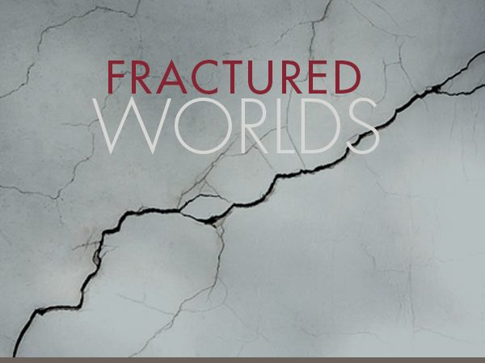
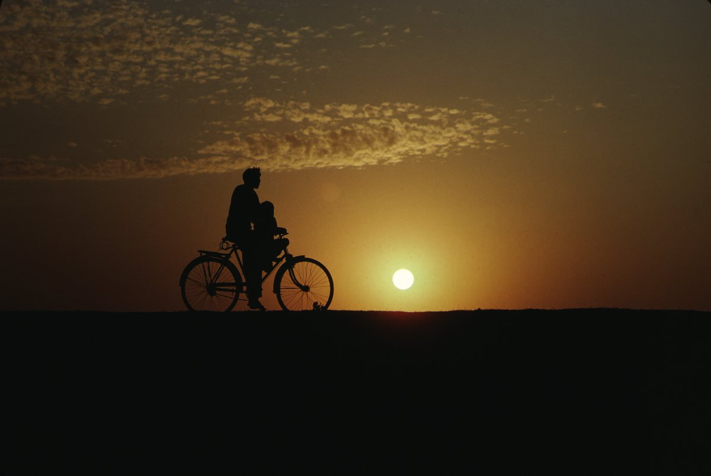
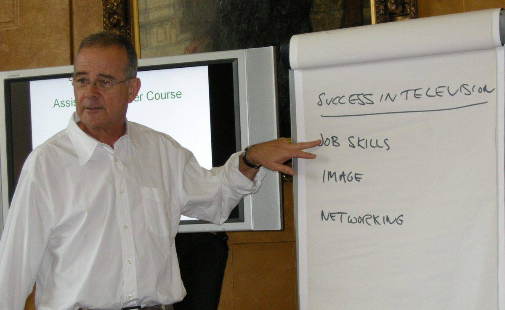

Andrew Snell
I have been fortunate to work in the golden age of television, as it is often called. Before streaming, public service broadcasting sometimes meant originality and quality could take precedence over size of audience.
My interests are the arts, countryside and science. I like films that show people of skill and enthusiasm going about their craft. For me, they are the real celebrities and if my films are less popular because they don't use TV celebrities or TV formats, I don't mind.
I also like enabling others to make films and TV programmes and I have a decent record in employing young people at my company Artifax Ltd and in the many years work I did for the BBC Training Academy and others.
places and the pursuit
of excellence.

Recent Work
New documentaries and current projects.

Career Highlights and Awards
Five decades of award-winning television.

Biography
From Uganda to British broadcasting.

Films and Television
Stories of art, science, history and food.

Training & Consultancy
Helping others tell compelling stories.